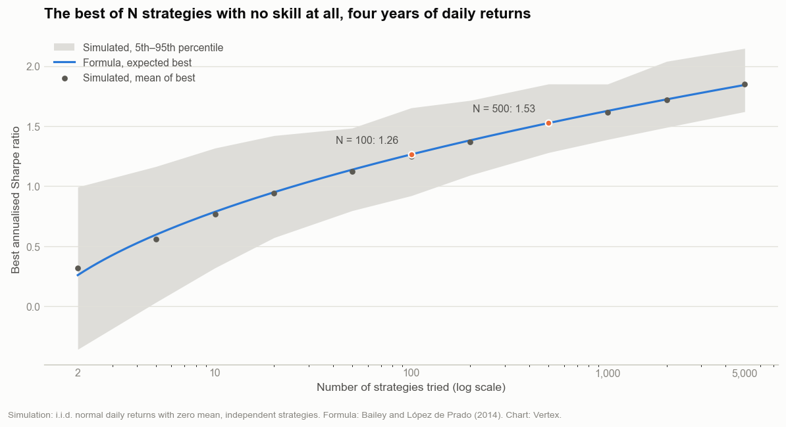
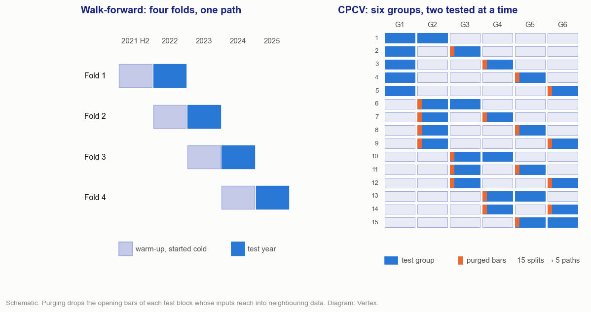
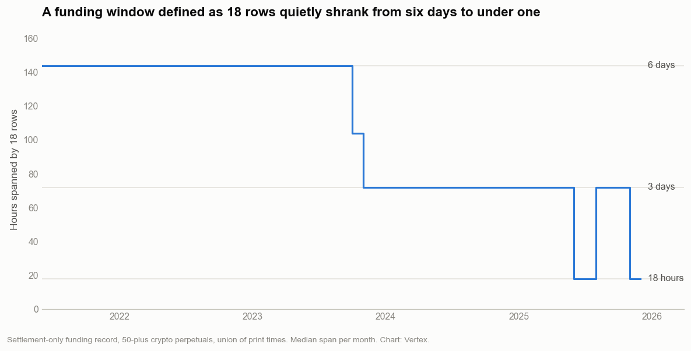
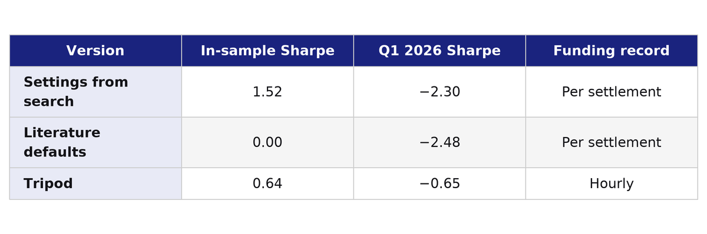

A research program is a search, and searches find luck.
The strongest in-sample result in the research behind the previous two posts belonged to the first version of the three-leg composite: a Sharpe ratio of 1.52 over 2022 to 2025. In the first quarter of 2026 it ran at −2.30. A version of the same construction at literature-default settings had scored 0.00 in-sample and ran at −2.48 over the same quarter.
One quarter is too short to judge a strategy: the standard error of an annualised Sharpe ratio over one quarter is about 2.0 even when there is no skill, so −2.30 sits about 1.1 standard errors below zero, and the gap to 1.52 is under two (about 1.8, taking 0.5 as the error on the in-sample figure). With a true Sharpe ratio near 1.5 the quarterly error is larger still. It is long enough to ask what the 1.52 measured. The answer changed how candidates are scored, how validation windows are cut, how input windows are defined, and what counts as a result at all.
Photo: Dietmar Rabich, CC BY-SA 4.0, cropped
How Many Strategies Were Tried
A Sharpe ratio estimated on four years of daily returns has a standard error of about 0.5 when the true value is zero. That is the noise around a single strategy. A research program does not test a single strategy. It searches, and the search reports its best result.
Bailey and López de Prado (2014) gave a closed form for the expected best of N independent estimates when none of them has skill:
Here γ is the Euler–Mascheroni constant, about 0.5772, and Φ⁻¹ is the inverse of the standard normal distribution. The chart compares the formula with a simulation of strategies whose daily returns are pure noise.

Expected best annualised Sharpe ratio of N zero-skill strategies, four years of daily returns: formula and simulation. Chart: Vertex.
With four years of daily data, the best of 100 skill-less strategies averages a Sharpe ratio of 1.26. The best of 500 averages 1.53, almost exactly the number that collapsed. Optimisation studies in this research typically ran a thousand trials or more. On this scale, 1,000 independent trials with no skill average a best Sharpe ratio of 1.63.
The trials in a study are not independent. Neighbouring parameter sets produce correlated return streams, so the effective number of trials is smaller than the count, and the bar is lower than the chart suggests. It is not low enough to make 1.52 remarkable. Bailey and López de Prado's deflated Sharpe ratio turns this into a probability: the chance that the true Sharpe ratio exceeds zero, given the best-of-N benchmark and the skewness and kurtosis of the returns. Harvey and Liu (2015) reach the same conclusion through multiple-testing corrections, which apply a haircut to every Sharpe ratio that was found by searching.
When Years Share a Memory
The first optimisation objective took one long backtest over the four years, cut it into calendar years, and averaged the yearly Sharpe ratios. It looked like a guard against a strategy that earns everything in one year. A review flagged what it missed. The slice for 2024 was produced by a strategy that had been running since 2022, and an optimiser could favour settings that only work with that much history behind them.
The fix was walk-forward folds that each start cold: a warm-up period drawn from before the scored sample, then one test year, with nothing carried in from earlier folds. The warm-up supplies input history only. It is never scored and never used for selection. Adding 2022 as a test year made the criterion stricter, because the 2022 crash is the year in which most candidates did worst.

Walk-forward folds and combinatorial purged cross-validation splits. Schematic. Diagram: Vertex.
The cold start turned out to treat a symptom. For a strategy whose parameters are fixed, and which carries no state beyond its input windows, the return on a given bar does not depend on which split is being scored. What leaks across a boundary is the lookback of its inputs: the first bars of a test block are computed from data that belongs to the block before it. The cross-validation framework of López de Prado (2018) handles overlap of this kind with purging and an embargo. Applied here, the opening bars of each test block, whose inputs reach into the previous block, are dropped, along with a stretch after each block. That removes the leak without restarting anything.
A Lookback That Shrank by Itself
Funding on perpetual futures is paid at fixed intervals, and the intervals differ by contract and change over time. The funding record used for the earlier backtests held one row per payment. Several inputs defined their lookbacks as a number of rows, on the reasonable assumption that a row is a fixed slice of time.
It was not. As contracts moved to shorter funding intervals, the union of payment times got denser, and a window defined as 18 rows covered less and less calendar time.

Median span of 18 consecutive rows of a settlement-only funding record, by month. Chart: Vertex.
Through 2023 the window spanned six days. From late 2023 it spanned three, and in parts of 2025 it covered 18 hours. Nothing in the code changed. The data underneath it did. The repair was a dense hourly funding record, with zero in every hour without a payment, and every lookback defined in calendar time. On the repaired data, the risk-premium composite's Sharpe ratio after costs moved from 0.34 to 0.00.
Many Paths, Not One
A walk-forward test produces one out-of-sample path. Combinatorial purged cross-validation, also from López de Prado (2018), produces many. The sample is split into six contiguous blocks, and every pair of blocks is held out in turn: fifteen test sets, each purged and embargoed at its boundaries. Stitched together, they reconstruct five complete backtest paths. A candidate is then judged on a distribution of Sharpe ratios instead of a single number.
The optimiser built after this episode selects on the median Sharpe ratio across the fifteen test sets. Every study also reports its probability of backtest overfitting. Bailey, Borwein, López de Prado and Zhu (2017) define it through combinatorially symmetric cross-validation: split the sample in half many ways, pick the in-sample winner each time, and count how often it lands below the median out-of-sample. Above one half, the act of selecting is itself overfit.
The deflated Sharpe ratio was considered as the objective and rejected. Its penalty grows with the number of trials searched. Inside a study of hundreds of trials, it pushes every candidate toward the same floor and ends up reporting the size of the search rather than the quality of the candidate. The probability of backtest overfitting asks the more useful question: whether the winner of the search holds up out-of-sample.
What the Search Added
The same three-leg construction exists in three versions. The first took its settings from the optimisation search and scored 1.52. The second used literature-default settings throughout and scored 0.00. The third is Tripod from the previous post, run on the repaired funding record, which earned 0.64 after costs.

Three versions of one construction. In-sample is 2022–2025. Table: Vertex.
In the first quarter of 2026, Tripod ran at −0.65: negative, but far from −2.30. The 1.52 and the 0.64 are not like for like. The first version's settings were the winner of a search, and it ran on the earlier funding record, with windows counted in funding rows. Tripod ran on the repaired record, with its third leg fixed in advance. The gap between them mixes selection and the funding repair.
A Sharpe ratio is only as informative as the process that produced it. Chosen by search on a flawed input, the construction showed 1.52. On the repaired input, the same construction showed 0.64 in-sample and −0.65 in its first quarter out of sample.
What This Does Not Establish
The best-of-N curve assumes independent strategies with normal returns. Real trials are correlated, and crypto returns have heavy tails, which widens the noise around every Sharpe ratio. The curve is a scale for intuition, not a test of any particular result.
A quarter of out-of-sample data cannot show that the three-leg composite had no edge. It shows that its in-sample number was not evidence of one. Cross-validated paths and overfitting probabilities reduce the cost of searching. They do not remove it, and a candidate selected on fifteen paths is still selected.
Where It Stands
The three-leg composite was never deployed. The hourly funding record, calendar-time lookbacks, purged cross-validated test sets and an overfitting probability for every study are what the later optimisation studies were built on.
What Generalizes From This
Report the number of trials next to the best result, and read the result against the best that luck would produce at that count.
Define every lookback in calendar time, not in rows, whenever the data's sampling frequency can change.
Sources
- Bailey, D.H. and López de Prado, M. (2014). "The Deflated Sharpe Ratio: Correcting for Selection Bias, Backtest Overfitting and Non-Normality." Journal of Portfolio Management 40(5), 94–107. Link
- Harvey, C.R. and Liu, Y. (2015). "Backtesting." Journal of Portfolio Management 42(1), 13–28. Link
- López de Prado, M. (2018). Advances in Financial Machine Learning. Wiley. Link
- Bailey, D.H., Borwein, J.M., López de Prado, M. and Zhu, Q.J. (2017). "The Probability of Backtest Overfitting." Journal of Computational Finance 20(4). Link